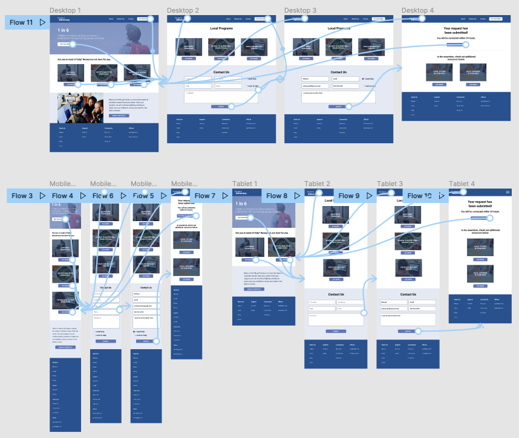
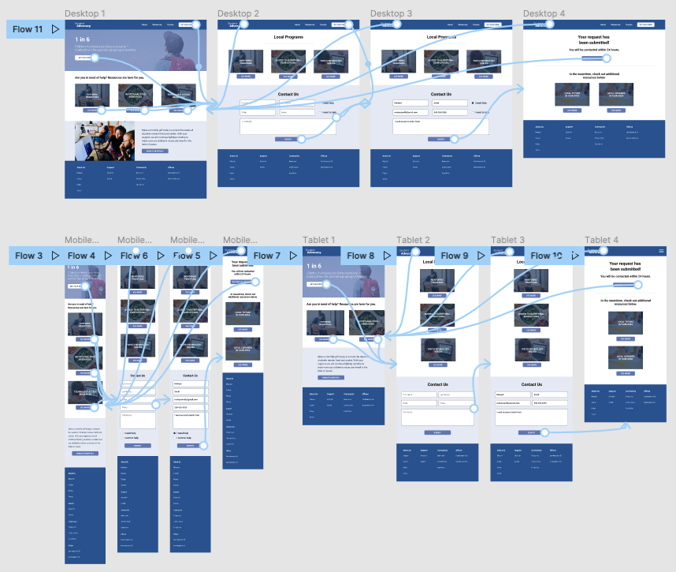

User Experience for Social Good
Student Advocacy is an organization focused on providing resources for students who are in poverty. This tool offers students support in their academic, social, physical, and emotional success.
My Role
UX Designer designing an app for Student Advocacy from conception to delivery.
Project Goal
Design an accessible cross-platform service that will provide resources to students who are affected by poverty.
Target Audience
Student Advocacy’s primary target users include students of all grades and levels in the United States who face financial challenges.
Challenge
Nearly 11.9 million students under the age of 18 live in poverty. The team at Student Advocacy found that students living in poverty often have fewer resources at home to complete homework, study, or engage in activities that helps equip them for success during the school day.
Research Study Details
We used Student Advocacy’s data on student poverty to develop interview questions, which were then used to conduct user interviews. Most participants reported feeling sad and uneasy about the impact of poverty, but didn’t know where or how to find resources that could help them. The feedback receive through research made it very clear that users would be open and willing to find and use resources if they had access to an easy-to-use tool to help them.
Findings
- Not all students have access to either a computer or mobile device. It was one or the other. Cross-platform is needed.
- Students had difficulty finding specific resources to their needs. Better categorization of resources with specific offerings will help users find their needs.
- Students often referred to images/graphics when browsing through. Text heavy pages are not as useful, so displaying imagery is more favorable.
Initial Design Concepts
Usability Testing
KPIs
Time on task: How long does it take for a user to complete each task?
Drop-off rate: How often do users not complete and leave the form page?
Conversion rate: How many users submitted the contact form?
Tasks
- Ask user to find assistance for computer use after school.
- Ask user to complete the contact form for more information.
- Ask user to tutoring help on outside of school.
- Ask user to search for local mentors in their area.
Results
- Users need a clear section from the home screen to browse for resources specific to the user.
- Users need a clear navigational flow for finding resources as the main component of the home page.
- Users need a seamless experience across multiple devices.
Final Designs
Link to Hi-fi Prototype »
 
